PLL (Permutation of the Last Layer)
PLL is the fourth and final step of the CFOP method and moves the oriented top layer pieces around to solve the cube.
Beginner PLL (also known as 2-look PLL) requires memorizing 6 algorithms and solves an oriented top layer with 2 algorithms, depending on which case you get. The first algorithm permutates the corners, and the second one permutates the edges.
PLL Tutorial
Step 1: Corner Permutation
The first step of beginner PLL is to solve all of the yellow corners relative to each other.
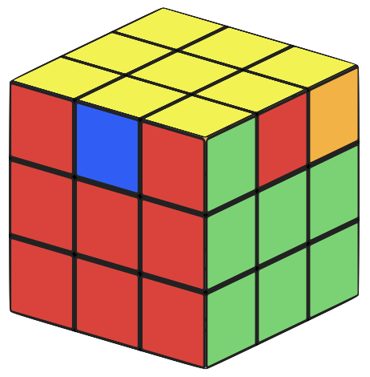
Case #1: Headlights
If you find a set of "headlights" (two corners on the same side that have the same color on that side, such as the red corners in the image), hold those corners on the left and do the adjacent corner swap algorithm:
(R U R' U') R' F R (R U' R' U') (R U R' F')
If you find a set of "headlights" (two corners on the same side that have the same color on that side, such as the red corners in the image), hold those corners on the left and do the adjacent corner swap algorithm:
(R U R' U') R' F R (R U' R' U') (R U R' F')
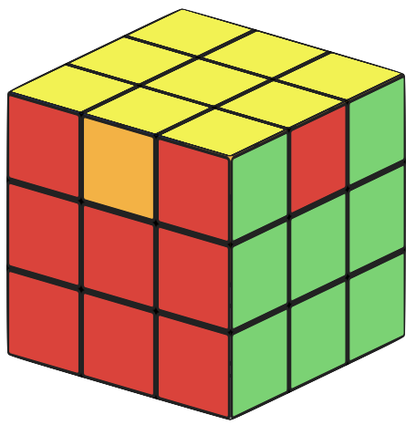
After this, all of the yellow corners should be placed correctly.

Case #2: No headlights
If you can't find a set of "headlights" (no two corners are displaying the same color on the same side, as shown), you need to do a diagonal corner swap. Hold the cube at any angle with yellow on top and do the following algorithm:
F (R U' R' U') (R U R' F') (R U R' U') (R' F R F')
If you can't find a set of "headlights" (no two corners are displaying the same color on the same side, as shown), you need to do a diagonal corner swap. Hold the cube at any angle with yellow on top and do the following algorithm:
F (R U' R' U') (R U R' F') (R U R' U') (R' F R F')
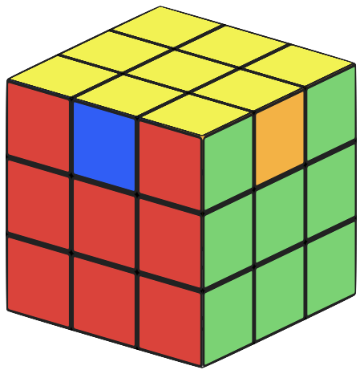
The yellow corners should be permutated correctly. You may notice that this
algorithm is a sort of inversion of the adjacent swap algorithm.
If you don't want to learn this second algorithm for diagonal corner swap, you can just do the adjacent corner swap algorithm from any angle and you will arrive at case #1, where you will need to do another adjacent corner swap.
If you don't want to learn this second algorithm for diagonal corner swap, you can just do the adjacent corner swap algorithm from any angle and you will arrive at case #1, where you will need to do another adjacent corner swap.
Step 2: Edge Permutation
The final step to solving the 3x3 using the CFOP method is to permutate the edges. This will solve the rest of the top layer of the cube.
Case #1: Ua perm
In this case, one of the edges is already in the right spot, and the three remaining edges need to be swapped in a counterclockwise rotation. An example of this case is shown from all four angles in the below images. To solve this case, hold the cube with the solved edge in the back, and do the following algorithm:
M2 U M U2 M' U M2
In this case, one of the edges is already in the right spot, and the three remaining edges need to be swapped in a counterclockwise rotation. An example of this case is shown from all four angles in the below images. To solve this case, hold the cube with the solved edge in the back, and do the following algorithm:
M2 U M U2 M' U M2
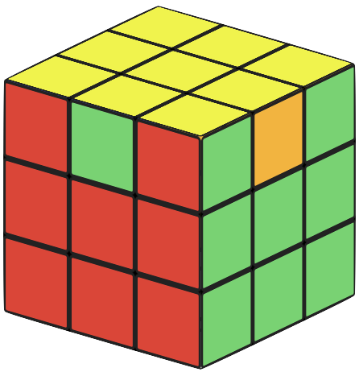
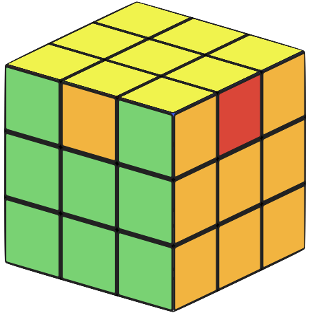
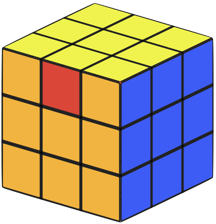
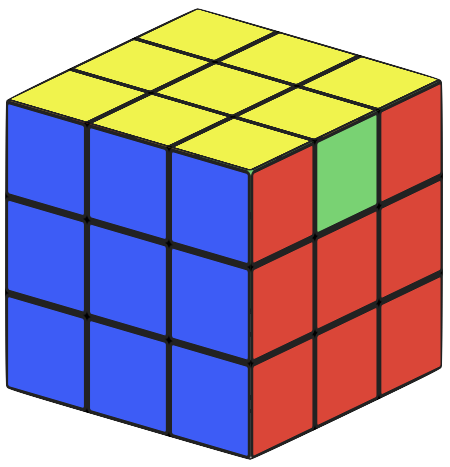
Case #2: Ub perm
This case is similar to the Ua perm, but the unsolved edges need to be swapped in a clockwise rotation. An example of this case is shown from all four angles in the below images. Hold the solved edge in the back and do the following algorithm:
M2 U' M U2 M' U' M2
This case is similar to the Ua perm, but the unsolved edges need to be swapped in a clockwise rotation. An example of this case is shown from all four angles in the below images. Hold the solved edge in the back and do the following algorithm:
M2 U' M U2 M' U' M2
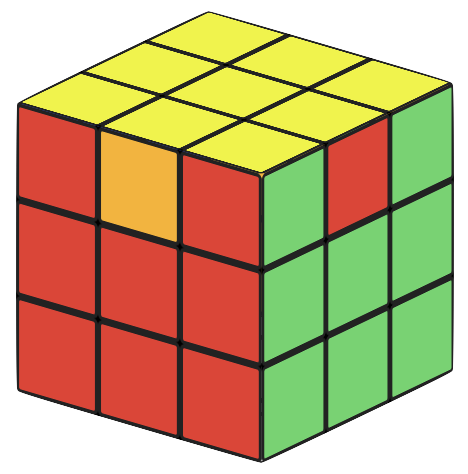
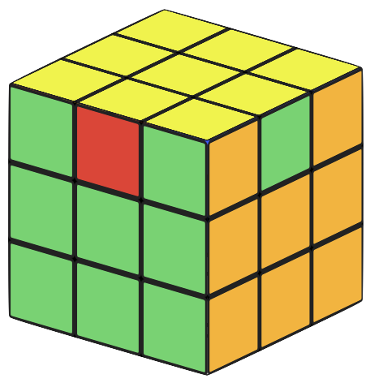
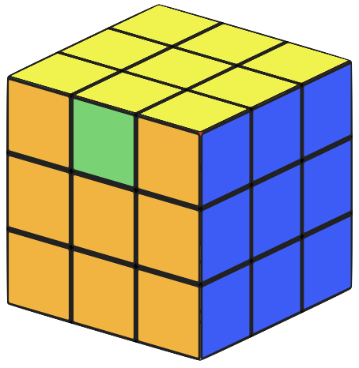
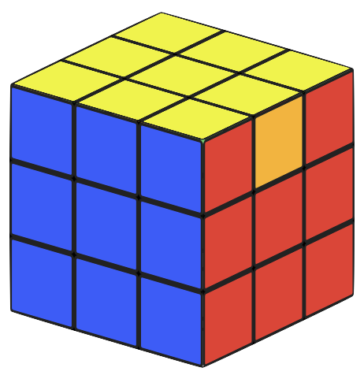
Case #3: H perm
In this case, no edges are in the correct spot. Edges across from each other on the cube must swap with each other: red must swap with orange, and blue must swap with green. An example of this case is shown from all four angles in the below images. The algorithm (done from any angle) is easy to remember:
M2 U' M2 U2 M2 U' M2
In this case, no edges are in the correct spot. Edges across from each other on the cube must swap with each other: red must swap with orange, and blue must swap with green. An example of this case is shown from all four angles in the below images. The algorithm (done from any angle) is easy to remember:
M2 U' M2 U2 M2 U' M2
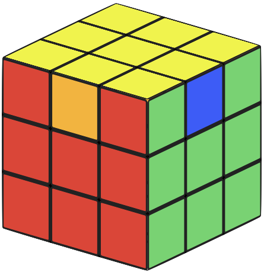
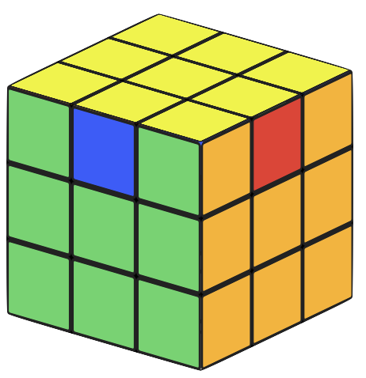
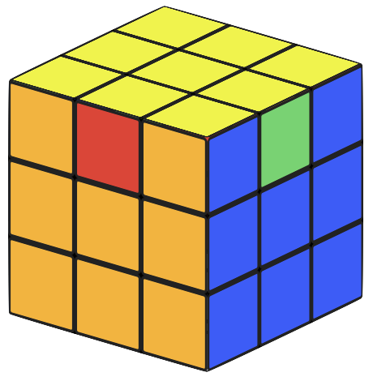
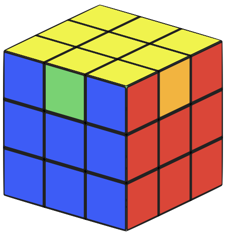
Case #4: Z perm
In this case, no edges are in the correct spot. Edgess next to each other on the cube must swap with each other, for example red with green and blue with orange. An example of this case is shown from all four angles in the below images. Hold two edges that need to be swapped with each other on the front and right. For example, if the red-yellow edge needs to swap with the green-yellow edge, hold one of those edges in front and one of them on the right and do this algorithm:
M' U' M2 U' M2 U' M' U2 M2
In this case, no edges are in the correct spot. Edgess next to each other on the cube must swap with each other, for example red with green and blue with orange. An example of this case is shown from all four angles in the below images. Hold two edges that need to be swapped with each other on the front and right. For example, if the red-yellow edge needs to swap with the green-yellow edge, hold one of those edges in front and one of them on the right and do this algorithm:
M' U' M2 U' M2 U' M' U2 M2
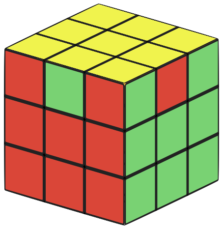
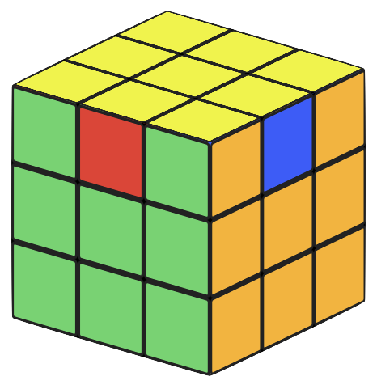
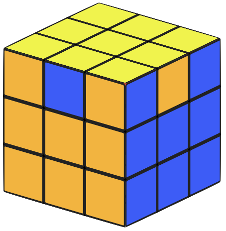
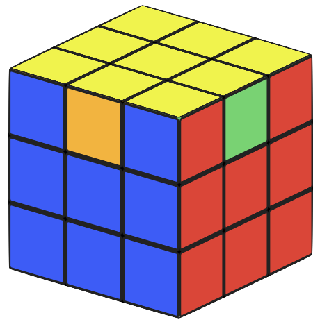
If you have a final U move to do, do it and the cube is solved using CFOP!
Previous: OLL